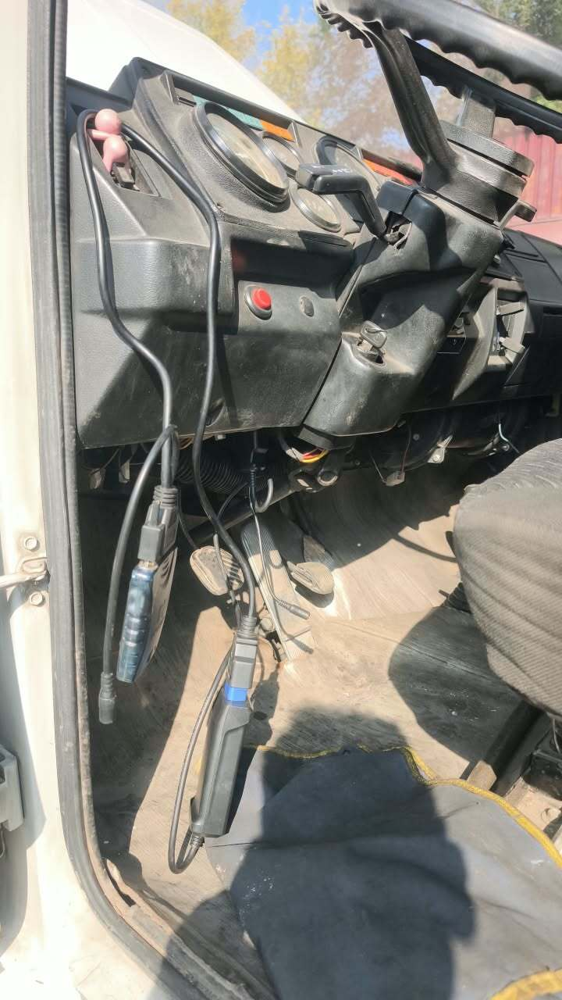

🚛 ГАЗ с двигателем Cummins не заводится — ошибки ТНВД, жидкое масло и подозрение на низкую компрессию
На компьютерную диагностику поступил грузовой автомобиль ГАЗ с дизельным двигателем Cummins (Камминз).
Основная жалоба владельца — двигатель не запускается. Необходимо было определить возможную причину неисправности и проверить электронную систему управления двигателем.
💻 Компьютерная диагностика Cummins

После подключения диагностического оборудования были обнаружены ошибки нескольких систем двигателя.
Основные коды неисправностей:
- P1631 — слишком низкое давление масла.
- P0668, P0072 — недостоверные сигналы датчиков положения педали газа.
- P1664 — неисправность цепи датчика засорённости топливного фильтра.
- P1121, P1122 — нарушения управления дозатором ТНВД.
- P2951 — ошибка работы дозатора топлива на холостом ходу.
- P0100 — некорректный сигнал датчика частоты вращения распределительного вала, согласно расшифровке сканера.
- P2953 — отключение круиз-контроля при нажатии педали тормоза.
После сохранения и сброса ошибок выполнили повторную диагностику.
Повторно появились P2951 по управлению дозатором ТНВД и P2953 по круиз-контролю.
Особое внимание уделили ошибке P2951, поскольку она может указывать на проблемы в системе управления подачей топлива.
🔍 Проверка двигателя и попытка запуска
Помимо компьютерной диагностики, провели дополнительные проверки.
🔹 Моторное масло оказалось слишком жидким. Это вызвало подозрение на изменение его вязкости, возможное разжижение топливом или другие проблемы с системой смазки.
🔹 Обнаружены признаки нежелательного подсоса воздуха, требующие дальнейшей проверки герметичности.
🔹 При попытке запуска с использованием очистителя карбюратора двигатель работал нестабильно. Устойчивой работы добиться не удалось.
Такое поведение двигателя, наряду с состоянием моторного масла, вызвало подозрение на возможное снижение компрессии в цилиндрах.
Однако низкая компрессия пока является предположением, поскольку её фактические значения не измерялись.
Само по себе жидкое масло не доказывает отсутствие компрессии. Для подтверждения необходимо проверить механическое состояние двигателя.
⚠️ Возможные причины неисправности
По результатам диагностики выделили несколько направлений дальнейшей проверки:
⚙️ Топливная система. Повторное появление P2951 требует проверки дозатора ТНВД, давления топлива и электрических цепей управления.
🛢 Система смазки. Необходимо выяснить причину слишком жидкого масла и проверить фактическое давление масла, учитывая ранее обнаруженную ошибку P1631.
🔥 Компрессия двигателя. Нестабильная работа при попытке запуска с внешним горючим составом может быть связана в том числе с механическим состоянием цилиндров, но не позволяет самостоятельно подтвердить низкую компрессию.
🔧 Рекомендации владельцу
По результатам проверки рекомендовано:
✅ Обратиться к специалистам по дизельной топливной аппаратуре.
✅ Проверить работу дозатора ТНВД и давление топлива.
✅ Проверить герметичность топливной системы.
✅ Проверить состояние моторного масла и возможное попадание в него топлива.
✅ Измерить компрессию двигателя.
✅ Проверить фактическое давление масла механическим манометром.
До выяснения состояния системы смазки и механической части двигателя дальнейшие попытки запуска нежелательны.
✅ Итог выполненной диагностики
🚛 Автомобиль: грузовой ГАЗ
⚙️ Двигатель: Cummins
⚠️ Жалоба: двигатель не запускается
💻 Компьютерная диагностика: обнаружены ошибки топливной системы, датчиков и давления масла
🔄 После сброса: повторились ошибки P2951 и P2953
🛢 Проверка масла: слишком жидкая консистенция
🔥 Попытка запуска: при использовании очистителя карбюратора двигатель работал нестабильно
🔍 Предположение: возможное снижение компрессии
🔧 Рекомендации: проверка ТНВД, состояния масла, давления масла и компрессии двигателя
В данном случае компьютерная диагностика выявила неисправности управления топливной системой, однако дополнительная проверка показала, что проблема может быть связана также с механическим состоянием двигателя.
☎️ 8-701-121-11-10 Олег
Читайте также: «MAN TGX 2012 не заводился — не качал ТНВД» и «DAF XF 105 2012 не переключает передачи».